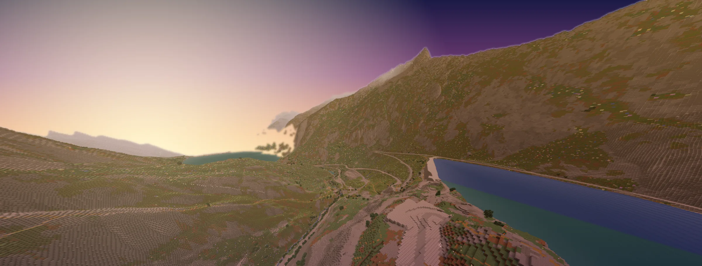
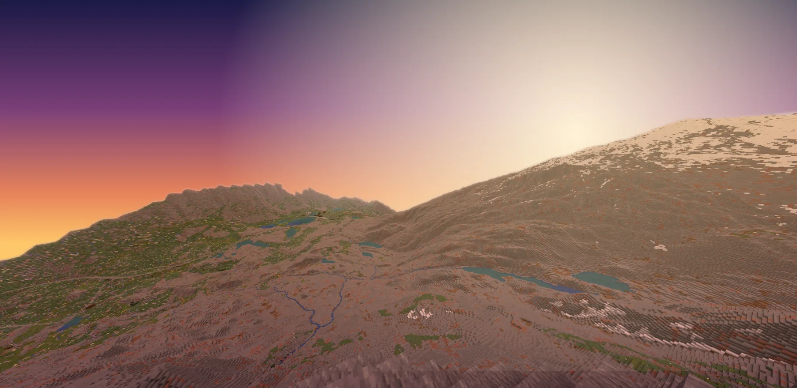
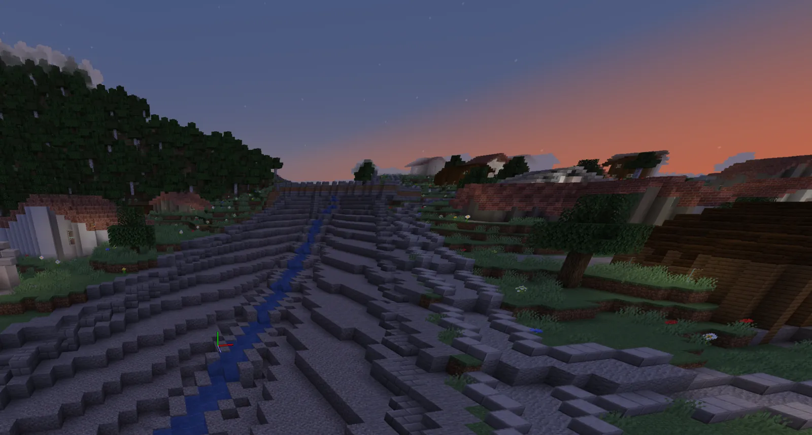

Switzerland, one block per metre.
Swiss World is a NeoForge mod that builds the country at 1:1 from swisstopo open data. Terrain, lakes, glaciers, roads, railways and buildings generate as you walk into them.
in game: /swiss
In-game screenshot on the Interlaken – Grimsel test route. Sky re-graded for this page.
Every metre is a block.
One block is one metre, horizontally and vertically. The dimension runs from y −2032 to 2031, so a valley floor at 568 m sits at y −1432 and the Grimsel Pass at y 164.
Above 3000 m the scale compresses to 0.6 so the highest summits still fit under the build limit. Buildings keep their true height.


Lazy, like a real hike.
Nothing is pre-generated. Step through /swiss and chunks form around you from 1 km² data cells fetched on demand. Once generated, they save like any vanilla chunk, so players can build, mine and live there.
Vanilla blocks only, so any client can join. /swiss goto takes you to coordinates or places, and /swiss back returns you to where you were.
From survey data to chunks.
Two parts work together: a Python sidecar that turns the national geodata into compact cells, and a NeoForge chunk generator that reads them.
swisstopo
Open data from the federal STAC download API: elevation models, the topographic landscape model, orthophotos and 3D buildings.
swissdata sidecar
Python service that downloads tiles for the cells it is asked for and merges them into layers: terrain, surface, water, roads, rail and buildings.
.swdcellOne compact file per square kilometre, cached on a volume shared with the server. Evictable once its chunks exist.
Chunk generator
The mod turns cells into blocks: ground material, rock faces, rivers and lakes, roads with bridges and tunnels, rail lines, and furnished buildings.
- swissALTI3D
- Terrain elevation
- swissSURFACE3D
- Surface heights for forest canopy
- SWISSIMAGE
- Orthophotos used to colour the ground
- swissTLM3D
- Roads, railways, rivers, lakes, land cover
- swissBUILDINGS3D · GWR
- Building footprints and heights; building register (BFS) for use and floors
- swissBATHY3D · swissNAMES3D
- Lake beds; place names for
/swiss goto
Walk in yourself.
You need Java 21 and uv. Start the terrain service, then a dev client. Out of the box the service only builds the Interlaken – Grimsel test area; the README explains how to open up the rest.
# 1 · the terrain service
git clone https://github.com/Bissbert/swiss-world && cd swiss-world/sidecar
uv sync
uv run python -m swissdata.server # cells land in ../store
# 2 · the mod, in another terminal
cd swiss-world/mod
./gradlew runClientWhere it stands
- Work in progress. Tuned along the Interlaken – Brienz – Meiringen – Grimsel Pass test route.
- Minecraft 1.21.1, NeoForge 21.1. Server-side generation; the client needs nothing extra.
- Ideas and fixes are welcome: open an issue.